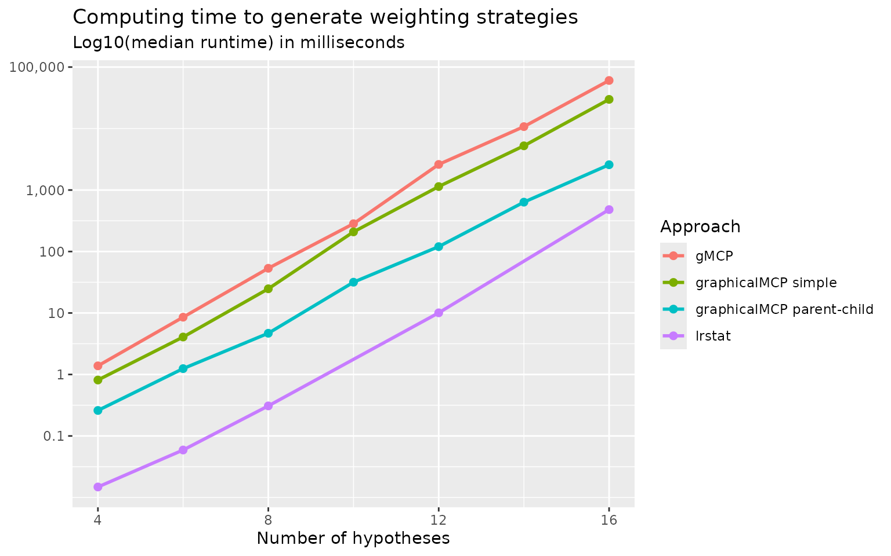

Rationales to generate the closure and the weighting strategy of a graph
Source:vignettes/generate-closure.Rmd
generate-closure.RmdMotivating example
Consider a simple successive graph with four hypotheses. It has two primary hypotheses \(H_1\) and \(H_2\) and two secondary hypotheses \(H_3\) and \(H_4\). Initially, hypothesis weights are split equally between \(H_1\) and \(H_2\) with 0.5. Hypotheses \(H_3\) and \(H_4\) receive 0 hypothesis weights because \(H_3 (H_4)\) is tested only if \(H_1 (H_2)\) is rejected. Thus there is an edge from \(H_1 (H_2)\) to \(H_3 (H_4)\) with a transition weight of 1. When both \(H_1\) and \(H_3\) are rejected, their hypothesis weights are propagated to \(H_2\); similarly, when both \(H_2\) and \(H_4\) are rejected, their hypothesis weights are propagated to \(H_1\). Thus there is an edge from \(H_3 (H_4)\) to \(H_2 (H_1)\) with a transition weight of 1. A graphical multiple comparison procedure is illustrated below.

Generating the closure
The closure of this multiple comparison procedure is a collection of
intersection hypotheses \(H_1\cap H_2\cap
H_3\cap H_4\), \(H_1\cap H_2\cap
H_3\), \(H_1\cap H_2\cap H_4\),
\(H_1\cap H_3\cap H_4\), \(H_2\cap H_3\cap H_4\ \ldots, H_1, H_2,
H_3\), and \(H_4\). In other
words, these intersection hypotheses consist of intersections based on
all non-empty subsets of \(\{1, 2, 3,
4\}\), e.g., \(\{1, 2, 3\}\),
\(\{1, 2, 4\}\), \(\{1, 3, 4\}\), \(\{2, 3, 4\}\), \(\ldots\). Thus there are \(2^4-1\) intersection hypotheses. An
equivalent way to generate all intersection hypotheses is to use a
binary representation. For example, the intersection hypothesis \(H_1\cap H_2\cap H_3\cap H_4\) corresponds
to \((1, 1, 1, 1)\) and \(H_1\cap H_2\cap H_3\) corresponds to \((1, 1, 1, 0)\). Then the closure can be
indexed by the power set of \(\{1, 2, 3,
4\}\) as below. In general, one can use
rev(expand.grid(rep(list(1:0), m))) to general the closure,
where \(m\) is the number of
hypotheses.
#> H1 H2 H3 H4
#> 1 1 1 1 1
#> 2 1 1 1 0
#> 3 1 1 0 1
#> 4 1 1 0 0
#> 5 1 0 1 1
#> 6 1 0 1 0
#> 7 1 0 0 1
#> 8 1 0 0 0
#> 9 0 1 1 1
#> 10 0 1 1 0
#> 11 0 1 0 1
#> 12 0 1 0 0
#> 13 0 0 1 1
#> 14 0 0 1 0
#> 15 0 0 0 1Calculating the weighting strategy
Given the closure, one can calculate the hypothesis weight associated with every hypothesis in every intersection hypothesis using Algorithm 1 of Bretz et al. (2011). The whole collection of hypothesis weights is called a weighting strategy. For example, hypothesis weights are \((0.5, 0.5, 0, 0)\) for the intersection hypothesis \(H_1\cap H_2 \cap H_3\cap H_4\). Then hypothesis weights for the intersection hypothesis \(H_1\cap H_2 \cap H_3\) are \((0.5, 0.5, 0, 0)\), which can be calculated by removing \(H_4\) from the initial graph and applying Algorithm 1 of Bretz et al. (2011). The algorithm calculates hypothesis weights in a step-by-step fashion. For example, for the intersection hypothesis \(H_1\cap H_2\), it can start from \(H_1\cap H_2 \cap H_3\cap H_4\) and calculates hypothesis weights for \(H_1\cap H_2 \cap H_3\) by removing \(H_4\) and then calculates hypothesis weights for \(H_1\cap H_2\) by removing \(H_3\); it can also start from \(H_1\cap H_2 \cap H_3\) (assuming its hypotheses weights are stored) and calculates hypothesis weights for \(H_1\cap H_2\) by removing \(H_3\). Therefore, there are two strategies to calculate the weighting strategy.
#> H1 H2 H3 H4
#> 1 0.50 0.50 0.00 0.00
#> 2 0.50 0.50 0.00 0.00
#> 3 0.50 0.50 0.00 0.00
#> 4 0.50 0.50 0.00 0.00
#> 5 0.75 0.00 0.00 0.25
#> 6 1.00 0.00 0.00 0.00
#> 7 0.75 0.00 0.00 0.25
#> 8 1.00 0.00 0.00 0.00
#> 9 0.00 0.75 0.25 0.00
#> 10 0.00 0.75 0.25 0.00
#> 11 0.00 1.00 0.00 0.00
#> 12 0.00 1.00 0.00 0.00
#> 13 0.00 0.00 0.50 0.50
#> 14 0.00 0.00 1.00 0.00
#> 15 0.00 0.00 0.00 1.00Approach 1: Simple approach
The first strategy utilizes the initial graph as the starting point and calculates hypothesis weights for all other intersection hypotheses. For example, to calculate hypothesis weights for \(H_1\cap H_2\), it will start with the intersection hypothesis \(H_1\cap H_2 \cap H_3\cap H_4\) and sequentially remove \(H_4\) and \(H_3\) (or in the other order). This approach is simple to implement since hypothesis weights for \(H_1\cap H_2 \cap H_3\cap H_4\) are determined by the initial graph and always available. This approach is similar to the one implemented in the gMCP R package. The drawback is that it does not use other information to reduce the number of calculations. For example, it is possible that hypothesis weights for \(H_1\cap H_2 \cap H_3\) have been calculated when calculating for \(H_1\cap H_2\). Using the information from \(H_1\cap H_2 \cap H_3\) would only need the one-step calculation, compared to the two-step calculation using \(H_1\cap H_2 \cap H_3\cap H_4\).
Approach 2: Parent-child approach
This approach tries to avoid the drawback of Approach 1 by saving
intermediate graphs. Then it only performs one-step calculation which
could save time. In general, an intersection hypothesis has a parent
intersection hypothesis, which involves all hypotheses involved in the
first intersection and has one extra hypothesis. For example, the second
row of matrix_intersections is \(H_1\cap H_2 \cap H_3\) and its parent
intersection is \(H_1\cap H_2 \cap H_3\cap
H_4\) in the first row; the third row of
matrix_intersections is \(H_1\cap
H_2 \cap H_4\) and its parent intersection is \(H_1\cap H_2 \cap H_3\cap H_4\) in the first
row. Thus we can identify the parent intersection hypothesis for each
row in matrix_intersections (except row 1) as the row
number 1, 1, 2, 1, 2, 3, 4, 1, 2, 3, 4, 5, 6, 7. Given this sequence of
parent hypotheses, it is simple to obtain hypothesis weights for an
intersection hypothesis based on its parent intersection hypothesis via
one-step calculation.
It is of interest to understand this pattern and obtain it
efficiently. First, between the bottom half (rows 9 - 15) and top half
(rows 1 - 7), each row’s parent in the bottom half is the corresponding
row in the top half, eight rows up, because the only difference is the
flipping of \(H_1\) from 1 in the top
half to 0 in the bottom half. For example, row 15’s parent is in row 15
- 8 = 7. Using this observation, we can determine parent hypotheses for
rows from 9 to 15 as 1, 2, 3, 4, 5, 6, 7. A similar pattern can be
observed for rows from 5 to 8. Their parent hypotheses are in rows 1, 2,
3, 4, respectively, by flipping \(H_2\)
from 1 to 0. For rows 3 - 4, their parent hypotheses are in rows 1, 2,
respectively, by flipping \(H_3\) from
1 to 0. Lastly for row 2, its parent hypothesis is in row 1. The row
number of the parent hypothesis can be efficiently generated by running
do.call(c, lapply(2^(seq_len(m) - 1), seq_len))[-2^m, ],
where \(m\) is the number of
hypotheses.
Comparing different approaches to calculating weighting strategies
To benchmark against existing approaches to calculating weighting
strategies, we compare the following approaches:
generateWeights::gMCP, fwgtmat::lrstat,
Approach 1 (graphicalMCP simple) and Approach 2 (graphicalMCP
parent-child). Random graphs are generated for the numbers of hypotheses
of 4, 8, 12, and 16. Computing time (in median log-10 milliseconds) is
plotted below. We can see that generateWeights::gMCP is the
slowest and fwgtmat::lrstat is the fastest. Approach 2
(graphicalMCP parent-child) is faster than Approach 1 (graphicalMCP
simple). Note that fwgtmat::lrstat implements the
calculation using C++, which is known to be faster than R. But it is
less stable than other approaches, e.g., giving errors more often than
others. Given that the computing time of R-based approaches is
acceptable, adding Rcpp dependency is not considered in
graphicalMCP. For these considerations, we implement
Approach 2 in weighting_strategy::graphicalMCP.
#> Warning: Using `size` aesthetic for lines was deprecated in ggplot2 3.4.0.
#> ℹ Please use `linewidth` instead.
#> This warning is displayed once every 8 hours.
#> Call `lifecycle::last_lifecycle_warnings()` to see where this warning was
#> generated.
Improving power simulations using parent-child relationships
Conventional approach for power simulations
The conventional approach for power simulations is to repeat the following process many times, e.g., 100,000 times. 1. Simulate a set of p-values 2. Run the graphical multiple comparison procedure to + Determine which hypothesis can be rejected + Remove the rejected hypothesis and update the graph + Repeat until no more hypotheses can be rejected Note that the same step to update the graph may repeat in many replications, which may be repetitive. For \(m\) hypotheses, there are at most \(2^m-1\) graphs depending on which hypotheses are rejected. These graphs corresponds to the closure and the weighting strategy. Thus an idea to avoid redundant updating of graphs is to utilize the weighting strategy.
Power simulations using parent-child relationships
The key to allow this approach is to efficiently identify the row of
the weighting strategy, given which hypotheses are rejected. Remembering
the pattern we found for Approach 2, the bottom half (rows 9 - 15) of
matrix_intersections is the same as the top half (rows 1 -
7), except flipping \(H_1\) from 1 to
0. This means that if \(H_1\) has not
been rejected (1 for \(H_1\) in
matrix_intersections), the row number of that index should
be in the top half. For example, assume that \(H_2\) and \(H_4\) have been rejected and the index in
matrix_intersections should be \((1, 0, 1, 0)\). Since \(H_1\) is 1, the corresponding row should be
in the top half (rows 1- 7). But \(H_2\) is 0 and thus the corresponding row
should be in the bottom half within the top half (rows 5 - 7). Since
\(H_3\) is 1 and thus the corresponding
row should be in the top half (rows 5 - 6). But \(H_4\) is 0 and thus the corresponding row
should be 6. A useful way to calculate the row number for an index of
XXXX is 2^m - sum(XXXX * 2^(m:1 - 1)). For example for
XXXX=1010, its row number should be
(1 - 1) * 8 + (1 - 0) * 4 + (1 - 1) * 2 + (1 - 0) * 1 + 1 = 16 - 10 = 6.
With the above way of efficiently identifying rows of
weighting_strategy, power simulations could be implemented
as follows: 1. Obtain the weighting strategy (once for all simulations)
2. Simulate a set of p-values 3. Run the graphical multiple comparison
procedure to + Determine which hypothesis can be rejected + Remove the
rejected hypothesis and identify the row of the weighting strategy +
Repeat until no more hypotheses can be rejected The small modification
in Step 3b make this approach much faster than the conventional approach
for power simulations.
Comparing different approaches to power simulations
To benchmark against existing approaches to calculating weighting strategies, we compare the following approaches: [gMCP::calcPower()], Approach 1 (graphicalMCP conventional), and Approach 2 (graphicalMCP parent-child). Both Holm and fixed sequence procedures are considered with the numbers of hypotheses of 4, 8, 12, and 16. Computing time (in median log-10 seconds) is plotted below. We can see that [gMCP::calcPower()] is the fastest and Approach 1 (graphicalMCP conventional) is the lowest. Note that [gMCP::calcPower()] implements the simulation using C, which is known to be faster than R but is not easy to extend to other situations. Given that the computing time of Approach 2 (graphicalMCP parent-child) is acceptable, we implement it in [graphicalMCP::graph_calculate_power].

#> Scale for y is already present.
#> Adding another scale for y, which will replace the existing scale.#> Scale for y is already present.
#> Adding another scale for y, which will replace the existing scale.